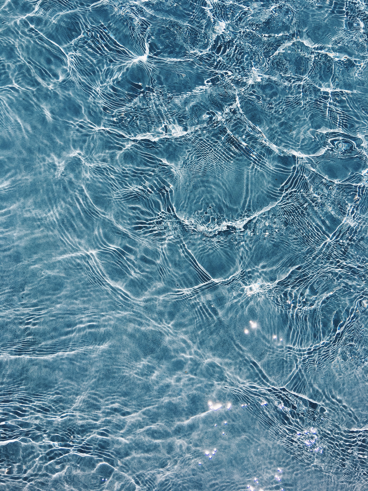

L'or bleu
L'eau, précieuse et vitale, est l'élément essentiel à la vie sur notre
planète. Elle couvre la majeure partie de la Terre, mais malgré sa
profusion en surface, elle demeure une ressource limitée et précieuse.
Elle incarne la quintessence de la pureté, un trésor qui soutient la
biodiversité et nourrit l'humanité depuis des millénaires.

La sauvegarde de
l'eau
L'eau, avec sa capacité unique à se transformer, à passer de
l'état liquide à solide et gazeux, est un élément de merveille et
de mystère.
L'eau, avec sa capacité unique à se transformer, à passer de l'état
liquide à solide et gazeux, est un élément de merveille et de mystère.
Les gouttes de pluie qui tombent du ciel, les rivières qui serpentent
à travers les paysages, les vastes océans qui recouvrent des étendues
infinies, sont autant de témoignages de la diversité et de la beauté
de l'eau. Elle est un agent de transformation, sculptant lentement les
montagnes et les canyons, et créant des paysages magnifiques au fil du
temps. Elle est également une source d'énergie, alimentant les
turbines des centrales hydroélectriques, et contribuant ainsi à la
production d'électricité propre et durable.
Mais l'eau est bien plus qu'une simple substance physique. Elle a une
signification profonde dans de nombreuses cultures à travers le monde.
Elle est associée à la purification, à la renaissance et à la
spiritualité. Elle symbolise la vie, la clarté et la réflexion. Elle
nous rappelle l'importance de la durabilité, de la préservation de
notre environnement et de la responsabilité envers les générations
futures. Pourtant, malgré l'abondance apparente de l'eau sur Terre, de
nombreux défis se posent. La pollution, la surconsommation et le
changement climatique menacent la qualité et la disponibilité de cette
ressource précieuse. Il est de notre devoir de protéger et de
préserver l'eau pour nous-mêmes et pour toutes les formes de vie qui
dépendent d'elle. L'eau est un rappel constant de notre
interdépendance avec la nature, de notre responsabilité envers la
planète, et de la nécessité de coopérer à l'échelle mondiale pour
préserver ce bien commun. C'est en faisant preuve de sagesse, de
respect et de responsabilité que nous pouvons garantir un avenir
durable, où l'eau continuera de nourrir, de purifier et d'inspirer les
générations à venir.